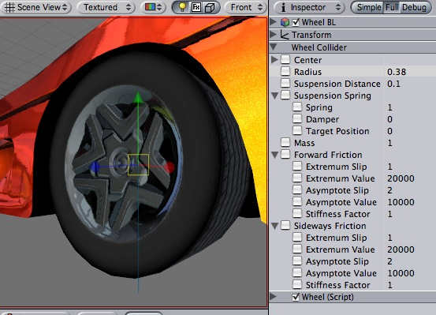
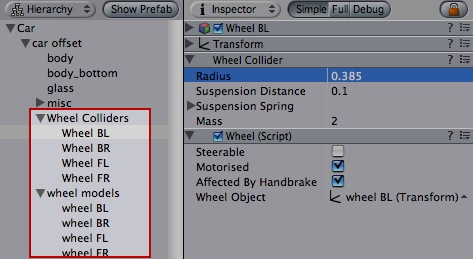
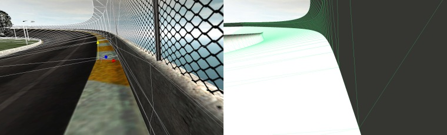
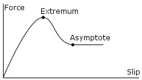

Previous
Previous
The Wheel Collider is a special collider for grounded vehicles. It has built-in collision detection, wheel physics, and a slip-based tire friction model.

The Wheel Collider Component. Car model courtesy of ATI Technologies Inc.
Properties
| Property: | Function: |
|---|---|
| Center of the wheel in object local space. | |
| Radius of the wheel. | |
| Maximum extension distance of wheel suspension, measured in local space. Suspension always extends downwards the local Y-axis. | |
The suspension attempts to reach a target position by adding spring and damping forces.
| |
| The Mass of the wheel. | |
| Properties of tire friction when the wheel is rolling forward and sideways. See Wheel Friction Curves section below. |
Details
The wheel's collision detection is performed by casting a ray from Center downwards the local Y-axis. The wheel has a Radius and can extend downwards according to Suspension Distance. The vehicle is controlled from scripting using the motorTorque, brakeTorque and steerAngle properties of the Wheel Collider component; see the Wheel Collider scripting reference for more information.
The Wheel Collider computes friction separately from the rest of physics engine, using a slip based friction model. This allows for more realistic behaviour, but also makes Wheel Colliders ignore standard Physic Material settings.
Wheel collider setup
You do not turn or roll WheelCollider objects to control the car - the objects that have WheelCollider attached should always be fixed relative to the car itself. However, you might want to turn and roll the graphical wheel representations. The best way to do this is to setup separate objects for WheelColliders and visible wheels:

Wheel Collider objects are separated from visible wheel models
Collision geometry
Because cars can achieve large velocities, getting race track collision geometry right is very important. Specifically, the collision mesh should not have small bumps or dents that make up the visible models (e.g. fence poles). Usually collision mesh for the race track is made separately from the visible mesh, making the collision mesh as smooth as possible. It also should not have thin objects - if you have a thin track border, make it wider in collision mesh (or completely remove the other side if the car can never go there).

Visible geometry (left) is much more complex than collision geometry (right)
Wheel Friction Curves
Tire friction can be described by the Wheel Friction Curve shown below. There are separate curves for wheel's forward (rolling) direction and sideways direction. In both directions it is first determined how much the tire is slipping (based on the speed difference between the tire's rubber and the road). Then this slip value is used to find out tire force exerted on the contact point.
The curve takes a measure of tire slip as an input and gives a force as output. The curve is approximated by a two-piece spline. The first section goes from (0 , 0) to (ExtremumSlip , ExtremumValue), at which point the curve's tangent is zero. The second section goes from (ExtremumSlip , ExtremumValue) to (AsymptoteSlip , AsymptoteValue), where curve's tangent is again zero:

Typical shape of a wheel friction curve
The property of real tires is that for low slip they can exert high forces, since the rubber compensates for the slip by stretching. Later when the slip gets really high, the forces are reduced as the tire starts to slide or spin. Thus, tire friction curves have a shape like in the image above.
| Property: | Function: |
|---|---|
| Curve's extremum point. | |
| Curve's asymptote point. | |
| Multiplier for the Extremum Value and Asymptote Value (default is 1). Changes the stiffness of the friction. Setting this to zero will completely disable all friction from the wheel. Usually you modify stiffness at runtime to simulate various ground materials from scripting. |
Hints
- You might want to decrease physics timestep length in Time Manager to get more stable car physics, especially if it's a racing car that can achieve high velocities.
- To keep a car from flipping over too easily you can lower it's Rigidbody center of mass a bit from script, and apply "down pressure" force that depends on car velocity.